Cinque Terre - Eine unvergessliche Wanderung entlang der ligurischen Küste
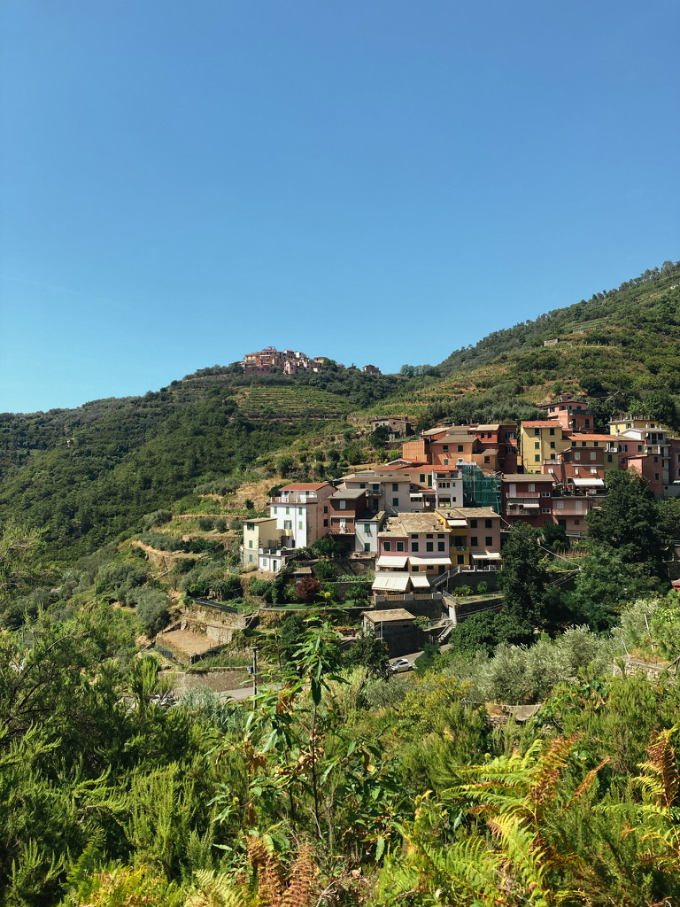
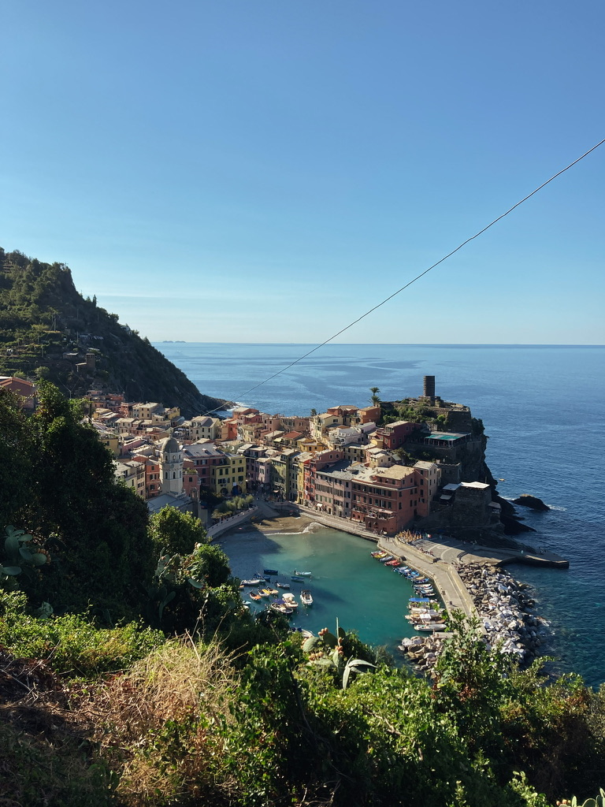
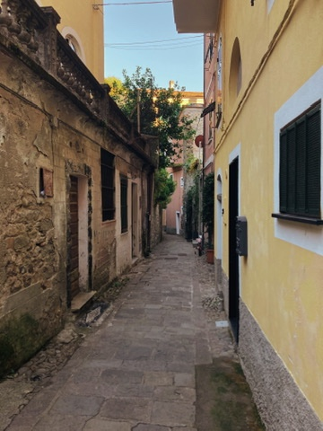
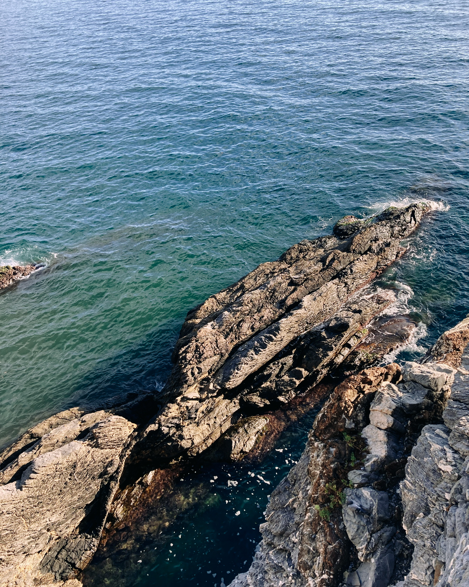
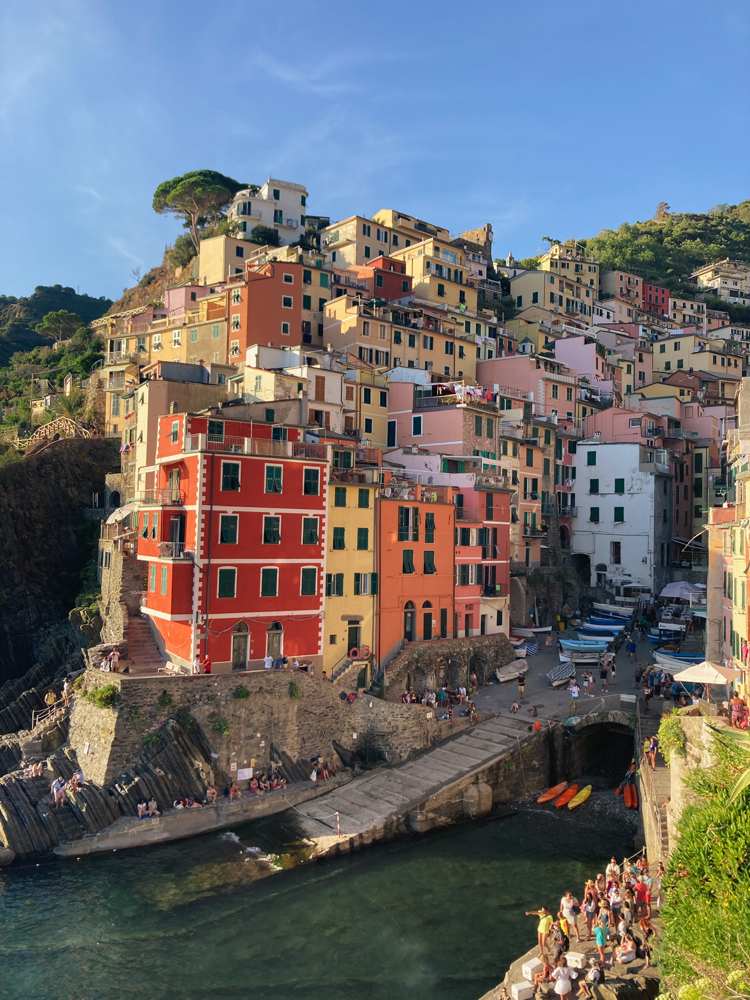
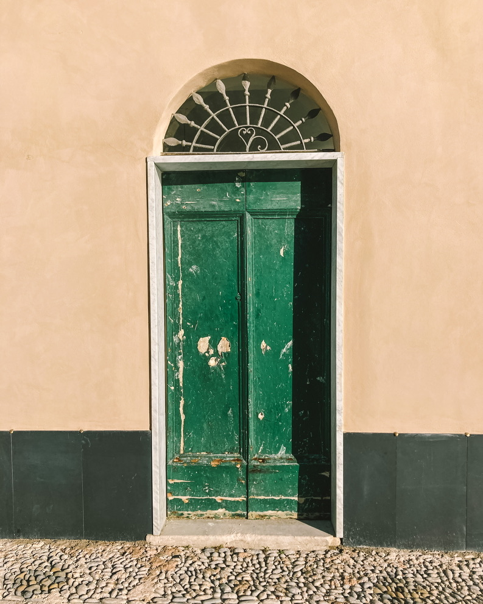
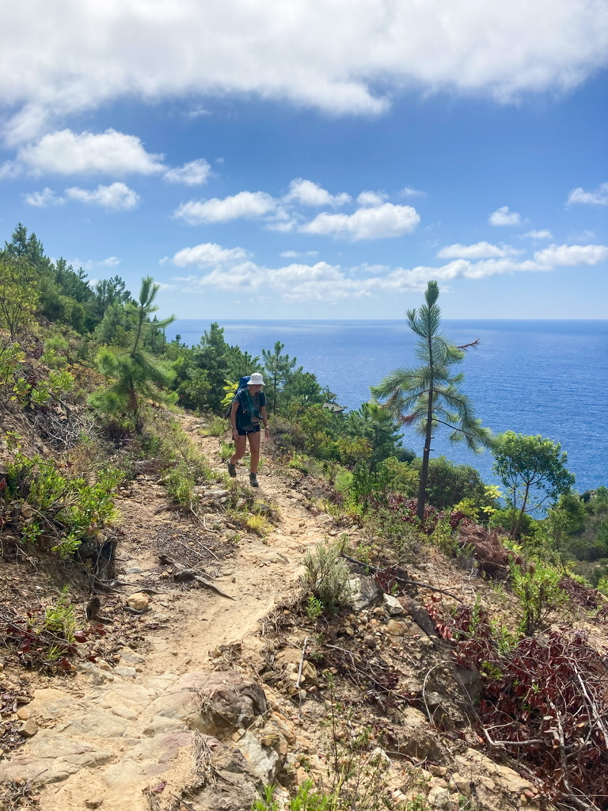
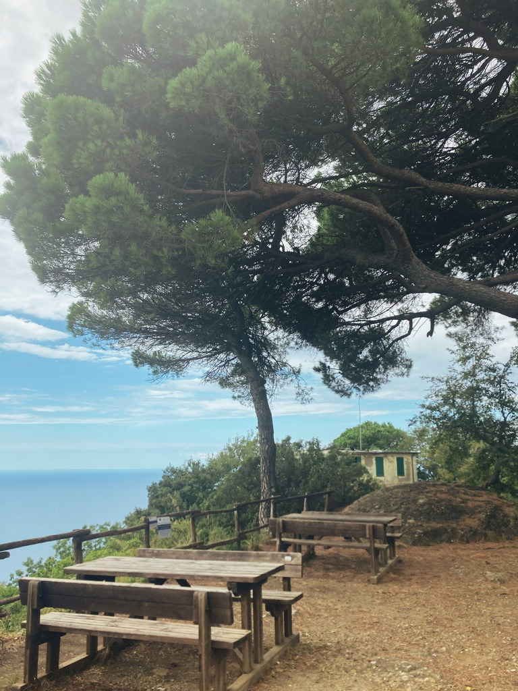
Die Cinque Terre gehören zu den schönsten Wanderregionen Italiens. Fünf malerische Dörfer, die sich entlang der steilen Küste der italienischen Riviera aneinanderreihen, bieten atemberaubende Ausblicke und unvergessliche Erlebnisse. Die Wanderung durch diese Region führt entlang spektakulärer Küstenpfade, durch Weinberge, Olivenhaine und idyllische Buchten.
Während meiner Reise durch die Cinque Terre konnte ich nicht nur die Natur in vollen Zügen genießen, sondern auch in die einzigartige Kultur und Geschichte der Region eintauchen. Die verschiedenen Etappen der Wanderung bieten immer wieder neue Perspektiven und Herausforderungen. In dieser Übersicht möchte ich meine Erfahrungen teilen und die schönsten Etappen dieser eindrucksvollen Wanderung vorstellen.
Unsere Route
Etappen-Übersicht
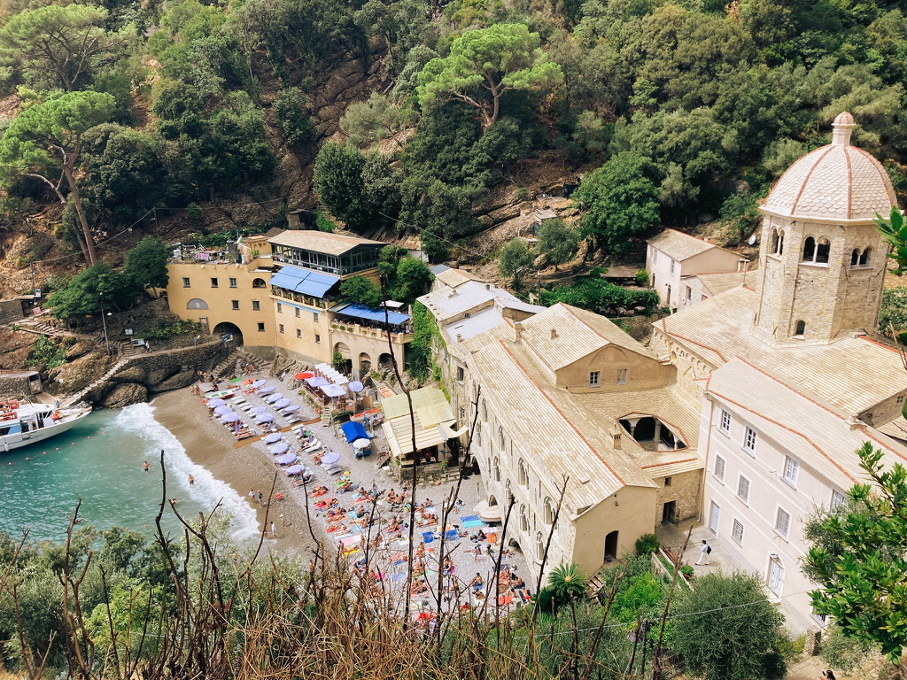
Etappe 1: Camogli - Portofino
Diese Etappe beginnt in Camogli, einem malerischen Fischerdorf, und führt entlang der Küste nach Portofino.
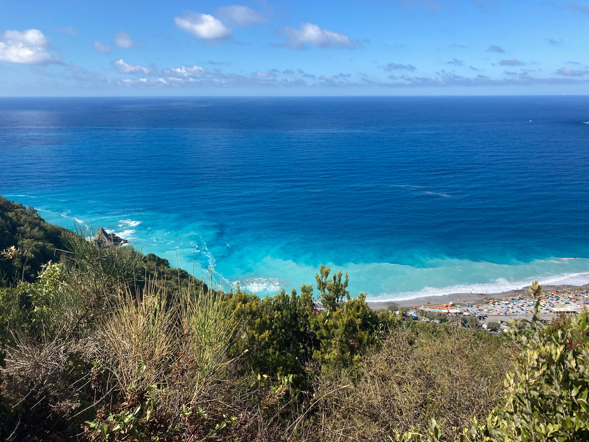
Etappe 2: Sestri Levante - Moneglia
Diese Etappe führt durch die wunderschöne Küstenlandschaft nach Moneglia, einem charmanten Küstendorf.
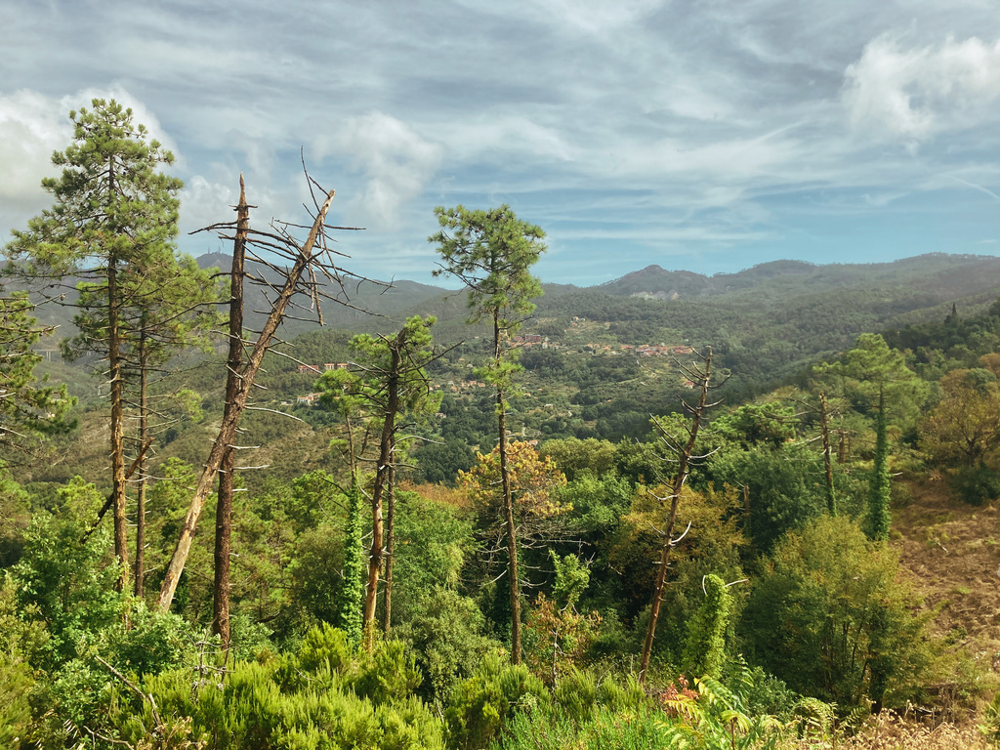
Etappe 3: Moneglia - Bonassola
Die Wanderung führt durch malerische Dörfer und bietet atemberaubende Ausblicke auf das Mittelmeer.
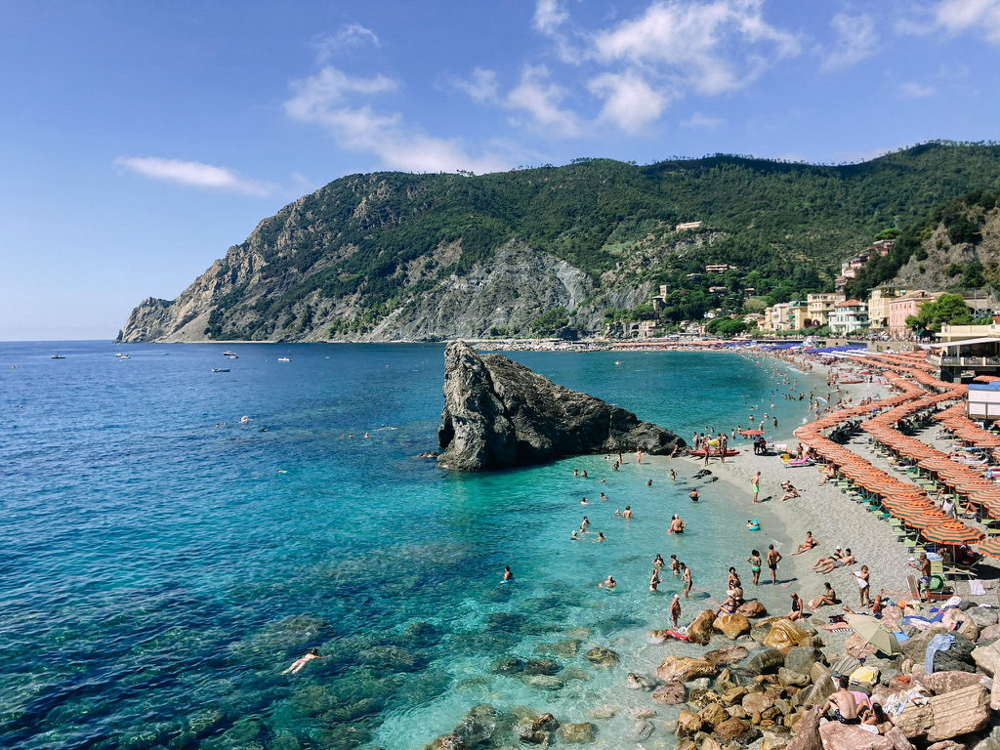
Etappe 4: Bonassola - Monterosso al Mare
Der nächste Abschnitt führt uns nach Monterosso al Mare, einem der beliebtesten Orte entlang der Cinque Terre.
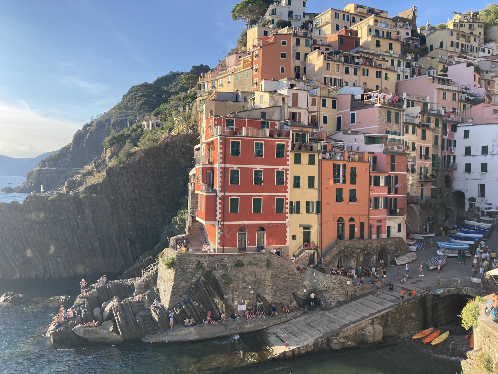
Etappe 5: Monterosso al Mare - Riomaggiore
Wir gehen weiter entlang der Küste, bis wir das malerische Riomaggiore erreichen, das letzte der fünf Dörfer der Cinque Terre.
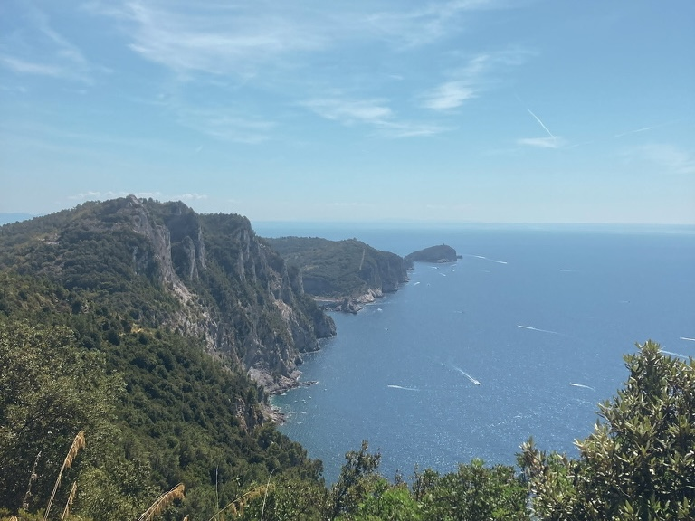
Etappe 6: Riomaggiore - Porto Venere
Die letzte Etappe führt uns nach Porto Venere, einem wunderschönen Ort, der am Fuße eines Berges liegt.